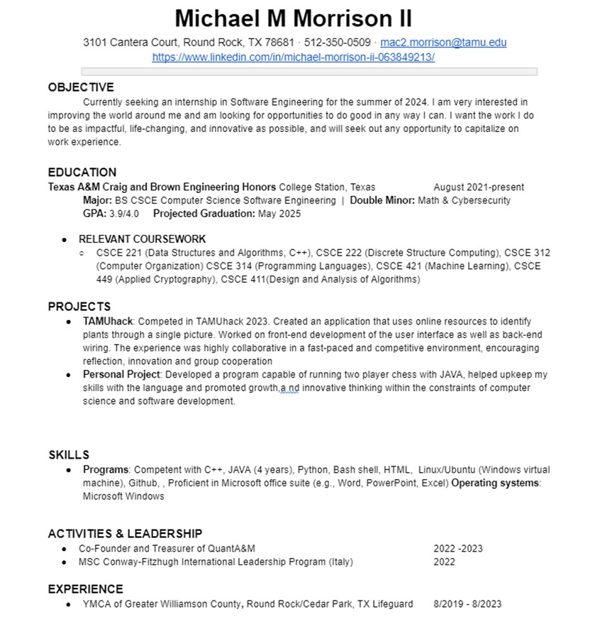

Michael is proficient in C++, Java, Python, Bash shell, Linux/Ubuntu, Microsoft suite, competent with github, HTML. Hard worker under stressful conditions and quick learner.
For a long time, Michael was in a constant state of limbo regarding his major. At first he was invested in biomedical engineering, which quickly morphed into chemical engineering, and finally into computer science by the end of the year. Michael is, above all, a problem solver. He enjoys more than anything to create and tweak until somwthing is perfect, and through this desire he was lead to the conclusion that is cybersecurity and computer science. Michael is mainly interested in cybersecurity, as well as how new pertinent technologies such as AI and machine learning can be used in its context.
RESUME: 